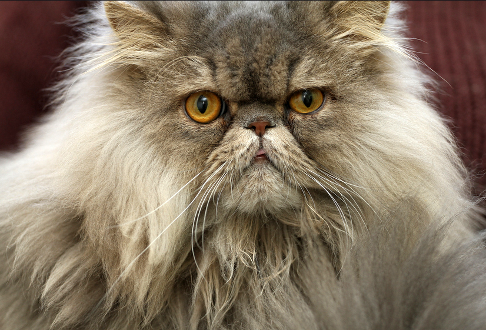
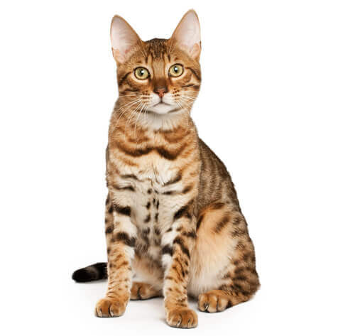
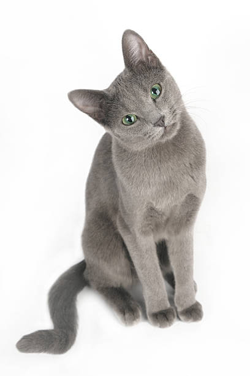

Siamés
El gato siamés probablemente sea uno de los gatos más populares del mundo actual. El azul intenso de su mirada hace que nos quedemos embobados mirándolo y, si a eso le sumamos la combinación de colores en su pelaje, el resultado es un esbelto, elegante y adorable gato que nos roba el corazón. Se trata de un felino originario de Tailandia que cuenta con dos variaciones, el siamés que trataremos, y el siamés thai o tradicional. Aunque las características de ambos son similares, realmente existen diferencias entre uno y el otro. De hecho, incluso hay gente que los confunde entre sí. Para que no te pase lo mismo, sigue leyendo esta ficha de ExpertoAnimal sobre la raza de gato siamés, su origen, características y cuidados, entre otras cosas.
Persa
El gato persa es una de las razas felinas más populares del mundo, siendo la cuarta más querida según la Cat Fancier’s Association. Este gato, oriundo de la antigua Persia (actual Irán), llegó a Italia en el año 1620 y desde entonces ha destacado como uno de los animales de compañía más queridos.
Para distinguirlos debemos fijarnos en la forma de la cabeza, el tipo de cuerpo y el color que presenta cada individuo en concreto. En ExpertoAnimal te ayudamos, mostrándote las características de los 7 distintos tipos de gatos persa que existen.
Bengala
Otra de las razas de gatos exóticos que no podía faltar en nuestra lista es el gato de Bengala, también conocido como gato bengalí. Muchas personas se preguntan si el gato de Bengala es un felino salvaje, sin embargo, a pesar de que una vez más nos encontramos con un cruce mezcla de un felino silvestre, esta raza se considera totalmente doméstica. Destaca por su manto suave y atigrado, así como por su tamaño, especialmente grande.
Azul ruso
¿Cuál es el mejor gato para tener en casa? Lo cierto es que no nos podemos decidir por uno, pero sí podemos decir que el azul ruso es probablemente el gato ideal para un soltero porque se trata de un tipo de gato muy cariñoso pero también muy independiente. Te será el más fiel cuando estés en casa, pero si no estás probablemente no se acuerde de ti.
Tiene un pelaje gris plateado precioso y un carácter de actividad media aunque disfruta jugando con quienes convive. Su carácter le hace perfecto para incluirlo en esta lista sobre los mejores gatos para tener en un piso.